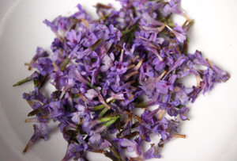

De hondsdraf is een klein plantje waarvan de paars-blauwe bloemen sterk lijken op die van de paarse dovenetel of het kruipend zenegroen. Deze drie planten behoren trouwens tot dezelfde familie die zich kenmerkt door een vierkante stengel en de bladeren groeien kruisgewijs twee aan twee tegenover elkaar aan de stengel. In bovenaanzicht vormen de bladeren dus een kruis. De drie planten zijn eetbaar en het kruipend zenegroen heeft een uitgesproken champignonsmaak.
Van dichtbij bekeken, al dan niet met een vergrootglas, kan men zien hoe prachtig de kleine bloemen van de hondsdraf zijn. De twee grote lippen van de hondsdraf doen ons denken aan de bloemen van orchideeën die vaak te zien zijn in de etalages van bloemenwinkels.
Hondsdraf was vroeger een vaak gebruikt kruid dat nu in onbruik is geraakt. Dankzij zijn zowel houtachtige als bloemige aroma kan deze plant een aangename smaak geven in salades, soepen en vele andere bereidingen. Vandaag de dag worden er eerder toegankelijkere kruiden gebruikt, zoals oregano, eveneens verwant aan de lipbloemen.
Zijn verrassende houtachtige aroma past uitstekend bij champignons. Samen vormen ze een smakelijke mengeling die uw tafelgasten zeker zal kunnen bekoren.